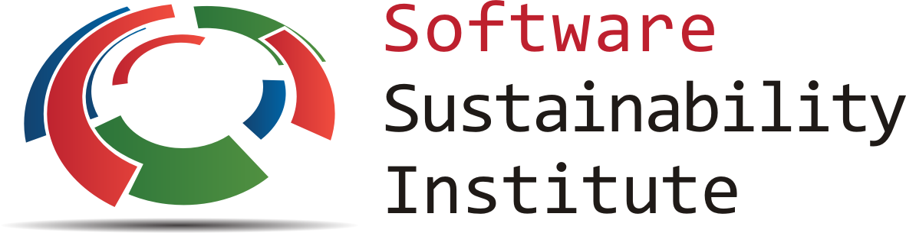
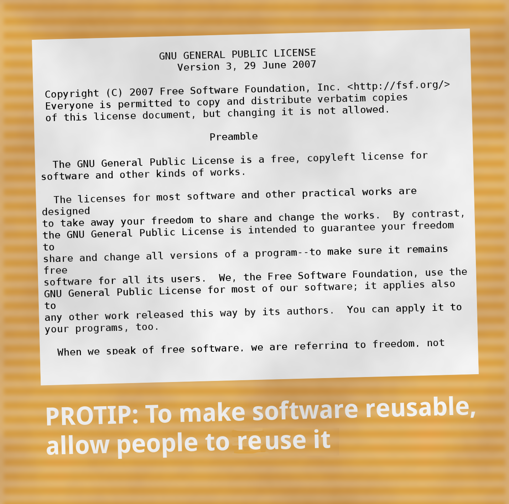

Research software development
Adam J. Jackson
adam.jackson@ucl.ac.uk
Introduction
"PRO TIPS"

- Sometimes it's ok to state the obvious
- Sometimes "advanced" problems have simple solutions
About me
- MEng chemical engineering at University of Bath (2006-2011)
- Joined the Sustainable Chemical Technologies DTC
- Joined Walsh Materials Design group (MRes project, 2011)
- PhD in same group (2012-2016)
- "Thermodynamics for practical kesterite photovoltaics"
- Post-doc in UCL Chemistry (Scanlon Materials Theory Group)
- Working on novel transparent conductors
- (Defects, so much hybrid DFT 😰)
About my programming
- Briefly exposed to BASIC at school
- Crash-course in Fortran in 2006
- Used some Matlab in undergrad
- Self-taught Python since around 2011
- Tinkered with some other stuff (C, Lisp, Julia, …)
- Never had a structured course beyond language basics
- Never been mentored by an experienced programmer
Projects
It's an interesting time to be using Github
When it comes to our commitment to open source, judge us by the actions we have taken in the recent past, our actions today, and in the future.
Microsoft CEO Satya Nadella
Microsoft Corp. threatened to close its research facilities in Britain if the government went ahead with plans to promote open-source software, one of David Cameron’s former advisers said.
Bloomberg, 2015
Sustainable Research Software
Software sustainability
- 92% of academics use research software
- 69% say that their research would not be practical without it
- 56% develop their own software
- (worryingly, 21% of those have no training in software development)
(Simon Hettrick, Deputy Director of SSI) https://www.software.ac.uk/blog/2014-12-04-its-impossible-conduct-research-without-software-say-7-out-10-uk-researchers

- Supporting research software community in the UK
- "Better software, better research"
- Training (partnership with Software Carpentry)
- Advocacy/policy (Research Software Engineers)
- Fellowship programme (this includes me!)
Reproducibility
We (scientists) need to talk about reproducibility
https://www.nature.com/news/1-500-scientists-lift-the-lid-on-reproducibility-1.19970
Some big ideas
People are working on ideas about relationship between code, data and science
FAIR principles
Developed for "scientific data management" https://www.nature.com/articles/sdata201618
- Findable
- Use persistent identifier
- Use metadata
- Available
- Retrievable by an open standard protocal
- Interoperable
- Format data in a formal, accessible way
- Reusable
- "richly described" and using community standards
- Usage license and detailed provenance
Software trouble
Software has some concerns aside from FAIR
- Installation can be complex
- Hardware requirements/compatibility issues
- Managing versions
Key points
Availability
In a recent study researchers requested data and code from a random sample of 204 Science papers… https://doi.org/10.1073/pnas.1708290115
Science has a code availability policy.
When you approach a PI for the source codes and raw data, you better explain who you are, whom you work for, why you need the data and what you are going to do with it.
I have to say that this is a very unusual request without any explanation! Please ask your supervisor to send me an email with a detailed, and I mean detailed, explanation.
Thank you for your interest in our paper. For the [redacted] calculations I used my own code, and there is no public version of this code, which could be downloaded. Since this code is not very user-friendly and is under constant development I prefer not to share this code.
R is a free software package available at www.r-project.org/ I used R for the [redacted] models. As you probably know, [redacted] and [redacted] are quite complicated. But I don’t have to tell you that given that you are a statistics student! I used Matlab for the geometry.
- Use a public source code repository following community
standards
- Also use a persistent archive such as Zenodo or institutional repository
Interoperability
- Keep It Simple, Stupid (KISS)
- You don't have to invent a new Turing-complete format for loosely-structured data. Use CSV,.ini,XML,JSON etc.
Re-usability

- If your code has no license, I can't redistribute it
- If I make changes to it, nobody can redistribute it
- This isn't going to work for open science, is it?
Software projects
Let's look at some different kinds of projects and consider their needs
Small program
- e.g. get-primitive
- Often called a "script" but doesn't have to be a scripting language
- Does one job well
- May even be a "single-shot" analysis with no options
- Requires
- Comments to aid understanding and reproducibility
- Help command and/or README
- Nice-to-have
- Installer
- Testing with sample data
Library
- e.g. SMACT
- To be called from other programs via API
- Requires
- API documentation
- Installation notes
- Test suite. Library gets called with different kinds of data and from different states; lots more scope for "surprises".
- Nice-to-have
- Usage guide; introduction to package and usage examples.
- Standardised coding style (good for contributions)
- Scripts act as an interface for non-developers and useful examples for API users.
"Code" (large program)
- e.g. VASP
- Multi-functional package for some general problem type
- Used primarily through a CLI or GUI
- Not expected to be self-explanatory as a small program
- Contains many components re-used for different problems
- Requires
- API for efficiently adding/extending features
- Documentation for developers (API)
- User interface (CLI and/or GUI)
- Documentation for general users (CLI/GUI)
- Tests
- Nice-to-have
- Sample data
Workflow
In practice, my workflow is usually
- Script or notebook prototype
- Convert script to a library for easier re-use
- Add features and variations using the API to make new CL tools
Documentation
You should watch Daniele Procida's amazing talk about documentation
- Pycon video: https://www.youtube.com/watch?v=azf6yzuJt54
- Blog version https://www.divio.com/en/blog/documentation/
The following ideas are directly taken from it
Four types of documentation
- Tutorials
- How-to guides
- Explanation
- Reference
Four types of documentation
Daniele uses a wonderful cooking analogy for these:
- Tutorials "Teaching a small child to cook"
- How-to guides "A recipe in a book"
- Explanation "An article on culinary social history"
- Reference "A reference encyclopedia article"
Four types of documentation
- These do not need to be located in four different places
- They should all exist and be findable at the right time
Four types of documentation
Applying them to scientific software:
Tutorials
- Usually in a README on online manual.
- Lead a beginner, showing input steps and expected output.
- Producing the right plot is a big confidence booster!
How-to guides
- A concise summary of how to do useful things.
- Questaal docs show how this can be combined with a tutorial
- Visual galleries are nice: see sumo or matplotlib
Explanation
- Background theory, important assumptions.
- Could be a chapter in manual
- Could be a "real" paper!
Reference
- API documentation
Detailed command line reference
Packaging
Stuff to include
- README
- LICENSE
- CONTRIBUTING
- INSTALL
- CITATION
- tests
README
- This document is usually your "homepage"
- Introduce the project
- Point to other resources
LICENSE
- Licensing is complicated
- Don't make it more complicated by inventing your own
- Use of standard licenses makes it quicker and easier for users
- https://choosealicense.com/
CONTRIBUTING
- Are external contributions welcome?
- How should people interact with the project?
- Do you have style/format requirements?
INSTALL
- Try to make installation easy…
- … but don't be weird about it!
sudomakes me nervous- For Python projects, use setuptools
- For compiled languages, use a simple makefile or autoconf
CITATION
- This is cutting edge!
- There still isn't really a standard way to cite code…
- … but there should be!
- Citation file format has been proposed.
- Based on YAML: readability balanced for humans and machines
- Can include papers
- New journals are emerging
tests
- Don't re-invent the wheel, use an existing framework for non-trivial testing
- "Continuous Integration" e.g. Travis CI automatically runs tests when changes are pushed to repository
Coverage testing is depressing but helpful
The actual coding bit
Some key skills
- Version control
- Learn how to use feature branches
- Write helpful commit messages
- Get good at editing
- Be lazy
- Use macros
- Use plugins
How to get better at programming
- A lot of this is just practice
- As with an instrument, practice only helps if it's good practice
- Try different things:
- Test-driven development
- Use more objects
- Use less objects
How to get better at programming
- Programming is better with friends! It can be easier to spot an elegant way of doing something in someone else's code
- Watch the issue tracker of a project you care about (e.g. ASE); this is a great way to learn from other people and get your feet wet with small contributions.
PROTIP: Write good code
- Use a style guide e.g. PEP8 for Python
pip install pep8for a nifty program that checks your style
- Assume that someone else will see and tinker with your code. This "someone else" is probably you in a year's time.
PROTIP: Write good code
- If developing a library or a code
- Plan out your overall structure and think carefully about the flow of data
- Introduce tests as soon as a package becomes non-trivial
PROTIP: Write good code
- Premature optimisation is evil
- (Don't speed up things that are "fast enough")
- Slow code is also evil
- (Try to keep a short loop of changing and testing)
PROTIP: Write good code
- Don't let perfect get in the way of good
- Someone else can help you get from good to perfect
Summary
Summary
- Good science is open about its methods
- They probably involve software
- You're going to have to show people your software
- Good software is approachable and maintainable
- There is an overwhelming number of tools and options
- but you can start by imitating projects you like